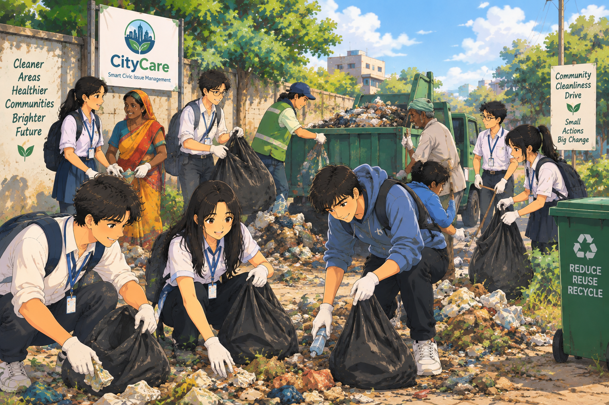

Reclaiming Public Spaces from Neglected Waste
A truly developed nation begins with pristine public corridors and disciplined sanitation. Across towns, states, and metro centers, unattended garbage heaps not only disfigure the landscape but also pose severe sanitary hazards, contaminating underground aquifers and breeding pathogens. CityCare was conceived to dismantle the wall of bureaucratic inertia: by providing instant, geolocated reporting, citizens can point out neglected trash dumps, enabling rapid municipality cleanups, organized segregation, and active recycling.
Real change happens when civic accountability meets community pride. As youth volunteers, local families, and municipal workers unite in coordinated cleanup drives, forgotten wasteland corners transform back into proud neighborhood assets. When citizens witness their reports turning into clean streets, respect for shared public property is restored.